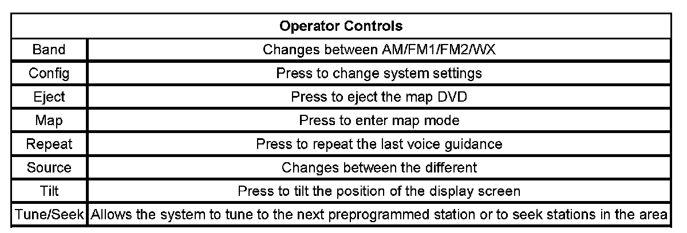

Navigation System Description and Operation
NAVIGATION SYSTEM DESCRIPTION AND OPERATION
Operator Controls:

NAVIGATION SYSTEM COMPONENTS
The navigation system contains the following components:
- Navigation radio
- Global positioning system (GPS) antenna
- Auxiliary RCA video jacks
Navigation Radio
This component acts as the operator interface for the navigation system, provides the data input from the operator to the navigation system and provides navigation information to the operator via the display screen. The navigation radio is located in the center of the instrument panel. The navigation radio provides the following:
- A display screen-All navigation, audio and TV functions are displayed on this screen
- Soft key buttons on the display to allow selection from menus and to operate the navigation system and the audio system.
- The navigation system map with routing information displayed on the navigation radio screen
- Provides verbal guidance to the operator
Global Positioning System (GPS) Antenna
The global positioning system (GPS) antenna is located in the upper center of the I/P. The GPS antenna is powered through the same coaxial cable used to send the signals to the NAV.
Auxiliary RCA Video Jacks
The auxiliary RCA video jacks are used to attach a remote video device. These connections may be used to provide audio and video input from a video player or camera to the rear seat entertainment system.
Voice Recognition
The Navigation System's voice recognition allows for hands-free operation of navigation and audio system features. The voice recognition can be used when the ignition is in accessory or ON, or when retained accessory power (RAP) is active. This feature only works if the map DVD is inserted and the AGREE button has been pressed. The memory seats can also be able to be set and selected using the voice recognition feature. For a complete list of available commands, refer to the Owners data Navigation Supplement and/or Personalization in the Owners data.